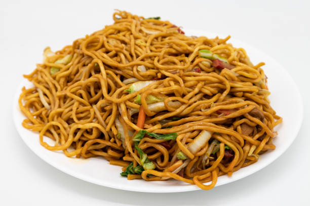

Pancit Canton
Pancit Canton is a popular Filipino stir-fried noodle dish made with wheat noodles, vegetables, and meat or seafood. It's often served at celebrations and gatherings.
Ingredients
- 250g pancit canton noodles
- 2 tablespoons oil
- 1 onion, sliced
- 3 cloves garlic, minced
- 1 carrot, julienned
- 1 bell pepper, sliced
- 100g snow peas or green beans
- 150g cooked chicken, shredded
- 100g shrimp, peeled and deveined
- 2-3 tablespoons soy sauce
- Salt and pepper to taste
- 2 green onions, chopped (for garnish)
Instructions
- Prepare the Noodles: Cook the pancit canton noodles according to package instructions. Drain and set aside.
- Heat the Oil: In a large skillet or wok, heat the oil over medium heat. Sauté the onions and garlic until fragrant.
- Add Vegetables: Add the carrots, bell pepper, and snow peas. Stir-fry for about 3-4 minutes until the vegetables are slightly tender.
- Add Proteins: Add the shredded chicken and shrimp. Cook until the shrimp turns pink.
- Combine: Add the cooked noodles to the skillet. Pour in the soy sauce and mix well. Season with salt and pepper to taste.
- Serve: Garnish with chopped green onions. Serve hot and enjoy your Pancit Canton!
Tips
- You can add other vegetables like cabbage or mushrooms for more flavor.
- For a vegetarian version, substitute the meat and shrimp with tofu and extra vegetables.
- Adjust the soy sauce according to your taste preference!